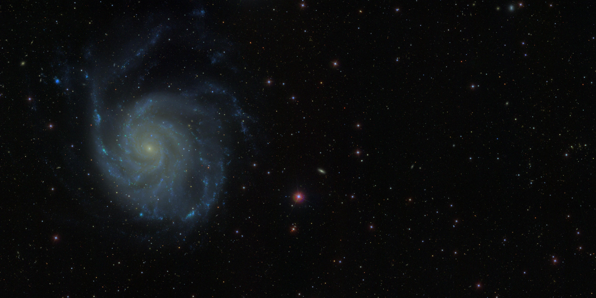

|  |
| An SDSS mosaic showing the galaxy M101 and its surroundings, combining g, r, and i band images. The region shown is 0.5 degrees by 1 degree. |
Although designed as a high-latitude, extragalactic survey, SDSS made numerous discoveries in Galactic structure, revealing new structures in the Milky Way’s stellar halo. SEGUE will include 3,500 square degrees of new imaging, some on a regular grid extending through the Galactic Plane -- sparsely sampling the whole sky from Apache Point Observatory – and some sampling structures like the Sagittarius Dwarf Tidal Stream.
SEGUE will also obtain spectra of 240,000 stars, with typical radial velocity accuracy of 10 km/s and typical chemical abundance accuracy of 0.3 dex. These data will provide invaluable insights into the structure of the Milky Way, the formation of its main components and the stellar processes that built the elements of the periodic table.